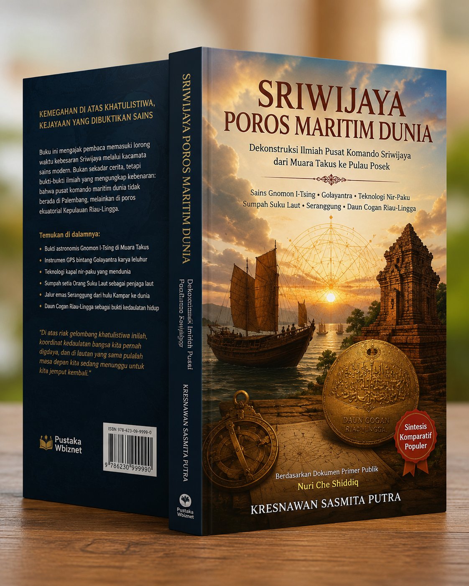

SRIWIJAYA POROS MARITIM DUNIA
Dekontruksi Ilmiah Pusat Komando Sriwijaya Dari Muara Takus Ke Pulau Posek
BAB 1: Benturan Epistemologi & Bukti Presisi Gnomon I-Tsing
Menggugat doktrin bahwa pusat Sriwijaya di Palembang. Secara astronomis dan fisika, peziarah I-Tsing mencatat fenomena Zero Shadow (tanpa bayangan) saat ekuinoks di Sriwijaya. Fenomena ini secara mutlak hanya terjadi di Lintang 0° Khatulistiwa (Kepulauan Lingga/Pulau Posek), sedangkan Palembang berada di 3° LS.
BAB 2: Anatomi Militer & Teknologi Maritim Unggulan
Dekonstruksi stigma "bajak laut" pada Orang Suku Laut yang sebenarnya merupakan angkatan laut resmi pelindung selat. Membongkar rahasia kapal raksasa (Jong) nir-paku dengan lambung fleksibel (flexible hull) yang tahan badai, serta penggunaan Golayantra—komputer astronomi perunggu "GPS Bintang" (peninggalan diaspora Persia).
BAB 3: Wanua Sakral Kampar & Fungsi Candi Muara Takus
Sungai Kampar berfungsi sebagai "jalan tol" logistik komoditas berharga seperti emas (Seranggung) dari hulu Bukit Barisan. Candi Muara Takus di hulu bertindak sebagai Wanua Sakral—stupa raksasa masif untuk tempat penyucian barang tambang sekaligus pusat pendidikan agama Buddha Mahayana.
BAB 4: Jalur Wangi-Wangian & Dekonstruksi Lukisan Gamron
Membongkar The Aromatic Route (gaharu, kapur barus, kemenyan) di Pulau Posik (Fo-shi). Menyingkap praktik History Laundering kolonial Belanda melalui lukisan klasik "Gamron" karya Pierre van der Aa yang ternyata merekam lanskap Teluk Riau Tanjungpinang, bukan Bandar Abbas di Iran.
BAB 5: Heterarki Nodal & Kedaulatan Daun Cogan
Sriwijaya bukan imperium terpusat yang kaku, melainkan tata ruang Heterarki Nodal (konfederasi pelabuhan bebas). Kedaulatan ini tidak dibuktikan dari batu mati, melainkan diwariskan secara hidup melalui regalia Daun Cogan emas Kesultanan Riau-Lingga.
Video
Baca Buku
<Ingin membaca ebook lengkap?
Download Ebook Lengkap